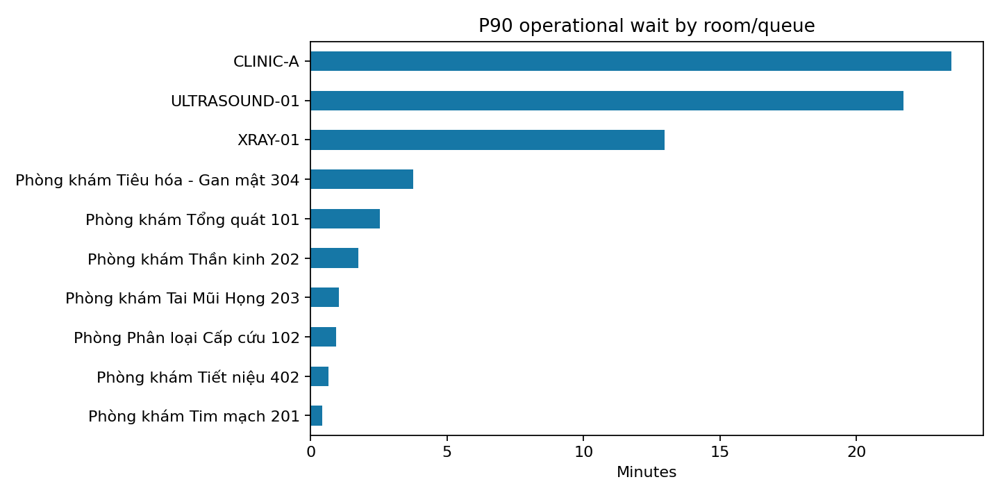
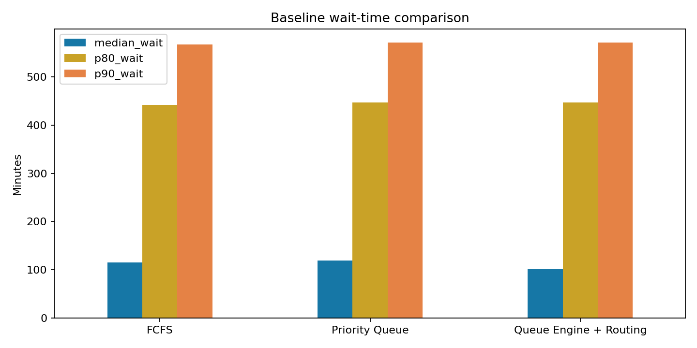

PostgreSQL/ep-falling-recipe-awd1tcj2.c-12.us-east-1.aws.neon.tech/neondb, gồm 136 task và 112 journey.Báo cáo trả lời năm câu hỏi: bệnh nhân chờ bao lâu; phòng/dịch vụ/khung giờ nào tạo tail wait; SLA và no-show ở mức nào; resource failure và emergency insertion đi cùng thay đổi wait ra sao; và bước nào kéo dài hành trình khám ban đầu → chụp chiếu/xét nghiệm → quay lại bác sĩ kết luận.
Phạm vi là dữ liệu task hiện có trong PostgreSQL hoặc seeded CSV fallback. Đơn vị chính là task, còn tổng bệnh nhân/journey dùng COUNT DISTINCT journey_id để tránh join one-to-many làm phồng số liệu.
Operational wait được tính từ thời điểm muộn hơn giữa ready_at và arrival_time đến service_start. Physical wait được giữ riêng. Journey completion tính từ check-in đến thời điểm hoàn thành cuối cùng. SLA EMERGENCY/URGENT/NORMAL/NON_URGENT lần lượt là 5/15/30/60 phút và được gắn nhãn demo assumption.
Quality profile kiểm tra uniqueness, missing field chính, timestamp parse, thứ tự timestamp, duration âm và enum priority. Kết quả: 1/24 check có failure; tổng failure critical/high là 5. Các lỗi này có thể làm sai percentile, SLA và journey duration, vì vậy dashboard không nên dùng cho điều hành thật trước khi remediation.
P90 cho thấy trải nghiệm đuôi dài rõ hơn median. Phòng/queue có P90 cao nhất trong extract là CLINIC-A, P90 23.5 phút, trên 10 task. Cần đối chiếu volume, staffing và failure events trước khi quy nguyên nhân.

Bước hành trình có median wait cao nhất là RETURN_REVIEW. Median wait tại bước này là 10.1 phút. RESULT_PENDING phải được xem là future workload thay vì hard queue; nếu không dashboard sẽ phóng đại backlog vật lý.
SLA breach hiện là 3.1% trên các task có wait đo được. No-show rate là 8.9% trên task không bị cancel. Resource failure comparison trong SQL là association mô tả; không được diễn giải là failure “gây ra” phần chờ tăng nếu chưa có counterfactual hoặc event timeline đầy đủ.
Emergency insertion được đánh giá theo hai lớp: mô tả trên dữ liệu task và simulation giữ cùng workload. Chỉ simulation mới chủ động bật/tắt emergency để đo số bệnh nhân NORMAL bị tăng wait trong điều kiện giả lập.
Ba chiến lược dùng cùng workload, random seed, arrival và service duration: FCFS; Priority Queue; Queue Engine + Routing. Kết quả dưới đây là trung bình nhiều lần chạy synthetic, phục vụ đánh giá thuật toán chứ không đại diện hiệu quả bệnh viện thật.
| scenario | median_wait | p80_wait | p90_wait | sla_breach_rate | average_journey_completion | throughput_per_hour | normal_p90_p50_spread | normal_wait_cv |
|---|---|---|---|---|---|---|---|---|
| FCFS | 115.687 | 442.249 | 567.303 | 0.798 | 226.802 | 10.148 | 453.21 | 0.984 |
| Priority Queue | 119.073 | 446.736 | 570.78 | 0.803 | 229.525 | 10.111 | 456.895 | 0.972 |
| Queue Engine + Routing | 101.434 | 446.736 | 570.78 | 0.779 | 225.09 | 10.111 | 472.308 | 1.005 |

Cách đọc: chiến lược tốt cần giảm P80/P90 và SLA breach mà không làm fairness của nhóm NORMAL xấu đi. Throughput, journey completion, P90−P50 spread và coefficient of variation phải được xem đồng thời, tránh tối ưu một KPI duy nhất.
arrival_at, eligible_at, ready_at, service_start, service_end, result_ready_at và return_arrived_at.journey_id và dependency task.Dataset hiện có nhỏ và trộn dữ liệu seeded với vận hành demo. room_id có thể thiếu ở task cũ, resource status enum còn hạn chế và routing strategy chưa được ghi thành experiment assignment. Các so sánh trước/sau vì vậy chưa phải causal analysis.
Kế hoạch dữ liệu thật: log immutable queue events; lưu policy/routing version; snapshot resource capacity 5 phút; ghi physical location/presence; thêm reason code cho no-show/cancel/override; và chạy tối thiểu bốn tuần shadow mode trước khi đánh giá uplift. Báo cáo nên được refresh sau khi đạt coverage timestamp ≥95% và orphan/duplicate critical bằng 0.